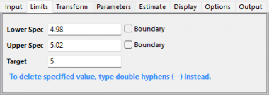
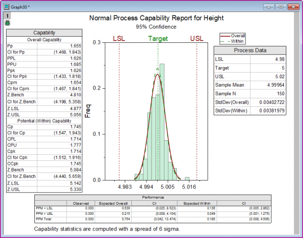
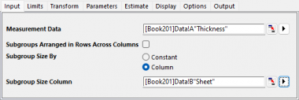
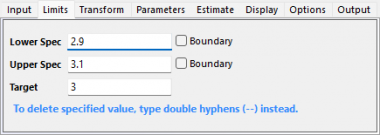
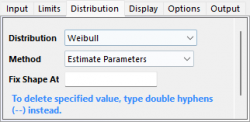
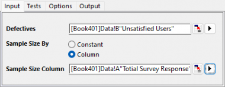
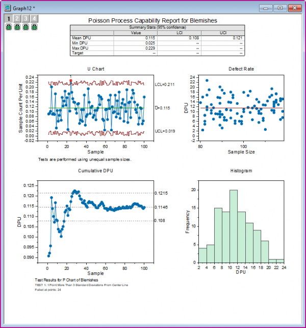

工程能力分析のチュートリアル
Tutorial-CA
始める前の注意
- ここからサンプルプロジェクトファイルをダウンロードし、Originで開きます。
 | 詳細情報:
|
正規工程能力分析
背景
品質管理エンジニアが、パイプの生産プロセスを評価します。150サンプルのパイプの高さ（フィート）データを収集しました。
このデータを分析して、パイプの高さが5.0±0.02 (4.98～5.02) になるか確認します。
Originでの操作
- フォルダ1.Normalを開きます。ブックのHeight of Pipeをアクティブにします。
- ワークシートのA列を選択します。Originのウィンドウ左側にあるアプリギャラリーウィンドウを開き、Statistical Process Controlアイコン
 をクリックします。
をクリックします。
- 工程能力分析タブを選択し、正規工程能力分析を選択します。

- 開いたダイアログの入力タブで、列Aが測定データとして自動的に選択されます。サブグループのサイズを定数にし、サブグループのサイズの定数を1に設定します。

- 限界タブで、下限規格を4.98にし、上限規格を5.02にして、 目標を5に設定します。

- OKボタンをクリックします。レポート表付きのグラフが作成されます。
結果の解釈
測定値が規格限界のほぼ中心にあり、すべての測定値は規格限界内にあります。また、工程能力指数であるCpk、PpkおよびCpmはすべて一般的に許容される最小値である1.33より大きいため工程能力が十分だと評価できます。従って、生産要件を満たしていると結論付けできます。

サブグループ間/内の工程能力分析
背景
あるエンジニアがステンレス鋼板の製造プロセスを評価したいと考えています。
彼は、連続した20枚の鋼板から４つの厚さの測定値を収集します。 厚さはほぼ3±0.1mmです。
Originでの操作
- フォルダ2.Between-Withinを開き、ワークブックのスチールシートをアクティブにします。
- Originのウィンドウ左側にあるアプリギャラリーウィンドウを開き、Statistical Process Controlアイコンをクリックします。
- 工程能力分析タブを選択し、サブグループ間/内の工程能力分析を選択します。
- 開いたダイアログの入力タブで、列Aを測定データとして選択します。サブグループのサイズを列にし、サブグループのサイズ列を列Bに設定します。

- 限界タブで、下限規格を2.9にし、上限規格を3.1にして、 目標を3に設定します。

- OKボタンをクリックします。レポート表付きのグラフが作成されます。
結果の解釈
すべての測定値が仕様範囲内に収まっているわけではありません。サブグループ間/内の工程能力分析の場合、CPは1.188であり、仕様の幅がプロセスの6σ幅の1.19倍であることを示しています。CpとCpkは若干異なっており、プロセスの平均値が仕様の中心から少しずれている（偏っている） ことを意味します。全体的な能力については、PP、Ppk、およびCPMがほぼ同じであるため、プロセスの変動が比較的安定し、ターゲット（目標値）に合っていることを示しています。しかし、Ppkは1.33よりも小さく、プロセスはある程度の品質を維持しているが、まだ改善の余地があるということが確認できます。これらから、プロセスは問題ないが、さらなる改善が可能であると結論付けることができる。

非正規工程能力分析
背景
重さの値のデータセットがあり、それはワイブル分布に従っています。そのデータが1を超えないことを望んでいます。
Originでの操作
- フォルダ3.Nonnormalを開きます。ワークブックWeibullをアクティブにします。
- Originのウィンドウ左側にあるアプリギャラリーウィンドウを開き、Statistical Process Controlアイコンをクリックします。
- 工程能力分析タブを選択し、非正規工程能力分析を選択します。
- 開いたダイアログの入力タブで、列Aを測定データとして選択します。
- 分布タブで分布をWeibullに設定し、方法を 推定パラメータに設定します。 形状を固定は空のままにします。

- 限界タブで、上限規格を1設定し、その他のすべてのテキストボックスを空のままにします。

- OKボタンをクリックします。レポート表付きのグラフが作成されます。
結果の解釈
データセットがワイブル分布に適合していることを示しています。すべての測定値が仕様の上限以下になっています。プロセスが要求を満たしていると言えます。

二項分布の工程能力分析
二項分布の工程能力分析は工程内の不良品の割合が顧客の仕様を満たしているかを評価するために使用される手法です。不良品か良品かの2値データ（属性データ）を分析する際に適用されます。
背景
あるショップのマネージャーが、25日間にわたり顧客満足度調査 を実施し、不満のある顧客数を記録しました。
彼は サービスが仕様を満たしているか を確認したいと考えています。
Originでの操作
- フォルダ4.Binomialを開き、ワークブックSurveyをアクティブにします。
- Originのウィンドウ左側にあるアプリギャラリーウィンドウを開き、Statistical Process Controlアイコンをクリックします。
- 工程能力分析タブを選択し、二項分布の工程能力分析を選択します。
- 開いたダイアログの入力タブで不良を列Bに設定します。サンプルサイズ列にし、サンプルサイズ列にA列を設定します。

- OKボタンをクリックします。レポート表付きのグラフが作成されます。
結果の解釈
P管理図から、すべてのサンプルが管理限界内に収まっているため、プロセスは統計的に管理状態にあることが確認できます。 累積不良率チャートでは、累積不良率（不満足ユーザー率）が約20%で安定しています。不良率プロットでは、点が平均線の周りにランダムに分布している。
サマリー統計テーブルでは、プロセスZ値が0.853と、2よりはるかに低いことが確認できます。これは仕様を満たしていないこと示しています。利用者の約20%が満足していません。

ポアソン分布の工程能力分析
背景
プラスチックフィルムの製造工程を評価する場合を考えます。プラスチックフィルムについて1時間ごとにデータが収集されます。特定の面積をカットし、傷や欠陥をカウントします。面積はcm2単位で、傷の数も記録します。計100時間分のデータを収集しました。製造プロセスが仕様を満たしているかを確認します。
Originでの操作
- フォルダ5.Poisson をプロジェクトエクスプローラで開き、Plastic Filmワークブックをアクティブにします。
- Originのウィンドウ左側にあるアプリギャラリーウィンドウを開き、Statistical Process Controlアイコンをクリックします。
- 工程能力分析タブを選択し、ポアソン分布の工程能力分析を選択します。
- 開いたダイアログの入力タブで不良を列Bに設定します。サンプルサイズ列にし、サンプルサイズ列にA列を設定します。

- OKボタンをクリックします。レポート表付きのグラフが作成されます。
結果の解釈
U管理図は結果の統計的制御の状態を評価します。U管理図では、1つの異常点が確認できます。全体的にはプロセスは安定している。累積DPUグラフは、十分なサンプル数があるかを確認するためのものです。データが平均DPU線に沿って平坦になっていることがわかります。これは、平均DPUの推定値が有効であることを保証するのに十分なサンプルがあることを意味します。
サマリー統計テーブルから、平均DPU（単位あたりの欠陥）が0.115であることがわかる。つまり、1つの欠陥が8.69cm²ごとに発生しています。DPUの95%信頼区間はLCL: 0.108 ～ UCI: 0.121である。すなわち、95%の確率で平均DPUが(0.108,0.121)内にあるということがわかります。
